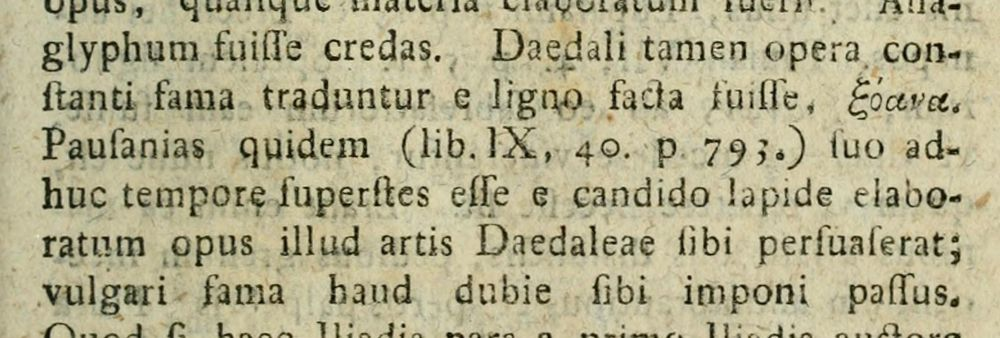

The works of Daedalus “e ligno” (p. 339)
Latin: Heyne, Opuscula academica vol. V, p. 339, scan n354. Heyne is describing the first, “mythical” age of Greek art, and has just mentioned the chorus wrought by Daedalus in the Iliad. The long s is printed as s. Highlighted: what Lecky reports.

One would suppose it to have been a relief. Yet the works of Daedalus are handed down by constant report as made of wood, xoana. Pausanias, it is true (book IX, 40, p. 793), had persuaded himself that this work of Daedalean art survived in his own time, wrought in white stone; no doubt he let himself be imposed on by popular report.
Translation: this edition’s draft.
Original Latin
Anaglyphum fuisse credas. Daedali tamen opera constanti fama traduntur e ligno facta fuisse, ξόανα. Pausanias quidem (lib. IX, 40. p. 793.) suo adhuc tempore superstes esse e candido lapide elaboratum opus illud artis Daedaleae sibi persuaserat; vulgari fama haud dubie sibi imponi passus.
“Opus illud” is the work Heyne has just discussed, the dancing-floor or chorus that the Iliad compares with the chorus on Achilles’ shield; the page number after Pausanias’ book and chapter refers to the edition Heyne used.
Further down the rabbit hole
Sources that Lecky cites in the notes next to the ones that cite this page.
- Raoul-Rochette, Cours d’archéologieWhy Greek statues were naked: “God is naked”, and emperors stripped for apotheosis
- Didron, Iconographie chrétienneHow medieval art pictured Christ the Judge
- Rio, De l’art chrétienHow oil painting reached Italy, and why its bringer preferred Venice
- Vitet, Études sur l’histoire de l’artWhy the saints in Rome’s mosaics grew ugly: Lecky blames the monks, his source blames the barbarians
- Matter, Histoire critique du gnosticismeKilled for looking pale: Cathars, fasting and the eleventh-century ‘Manichaeans’
- Ford, A Handbook for Travellers in SpainThe Alhambra as a tent turned to stone, and the sculptor who prayed before he carved


Backlinks
Every place in Rationalism in Europe that links to this page (generated automatically when the site is built).
- Chapter III: note 61